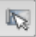
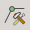
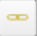

3.5. Odkazy různých objektů v QWAT
V QWAT jsou ručně vytvořeny pouze 2 typy odkazů, a to:
spojení trubek mezi nadřazeným a podřazeným (to umožňuje propojit 2 sousední trubky se stejnými atributy, které budou ve schematických pohledech agregovány do jednoho objektu)
Spoje s netěsným potrubím (Pro připojení netěsnosti k potrubí, na kterém je umístěna)
3.5.1. Vytváření vztahů nadřazený-podřazený
Chcete-li vytvořit vztah mezi nadřazeným a podřazeným, musíte vybrat vrstvu „potrubí“, což je položka ve vrstvě „Síť“. Přepněte do režimu úprav.
Vyberte podřízené chování (to, které bude používat atributy nadřazeného chování) pomocí tlačítka „identifikovat entity“.
Otevře se maska objektu. Pak musíte přejít na záložku „Vykreslení“. Máte pole „Nadřazený“, které označuje číslo nadřazeného potrubí, pokud existuje. Chcete-li přidat nadřazené potrubí, klikněte na tlačítko
a poté klikněte na naši nadřazenou linii (na mapě). Nadřazené pole musí být vyplněno.
3.5.2. Zrušení vztahů mezi nadřazeným a podřazeným potrubím
Chcete-li odstranit vztah nadřazený-podřazený, vyberte kategorii „potrubí“, což je podložka ve vrstvě „Síť“. Přepněte do režimu úprav
Vyberte podřízené chování (to, které bude používat atributy nadřazeného chování) pomocí tlačítka „identifikovat entity“.
Otevře se maska objektu. Pak musíte přejít na záložku „Vykreslení“. Máte pole „Nadřazený“, které označuje číslo nadřazeného kanálu. Chcete-li toto číslo smazat, klikněte na tlačítko
Číslo musí být odstraněno a místo toho by mělo být „NULL (bez výběru)“.
3.5.3. Vytváření relací řízených únikem
Jakmile je opravná objímka vytvořena, musí trubka projít touto objímkou. Chcete-li to provést, použijte „uzel nástroj“
a dvakrát klikněte na potrubí v místě poblíž opravného pouzdra. Přesuňte nově vytvořený bod pomocí stejného nástroje. Otevřete masku potrubí, přejděte na kartu „únik“ a vytvořte připojení aktivací úpravy dat
Poté klikněte na:
Objeví se tabulka všech netěsností, najděte tu, která se nás týká, a vyberte ji kliknutím na odpovídající číslo řádku. Poté klikněte na „OK“, vrátíte se do masky potrubí s normálním identifikačním číslem opravného pouzdra označeného červeně.
Poté deaktivujte editor dat, zobrazí se dotaz, zda chcete uložit změny vrstvy „netěsnosti“. Klikněte na Uložit. Číslo musí být předáno černě.